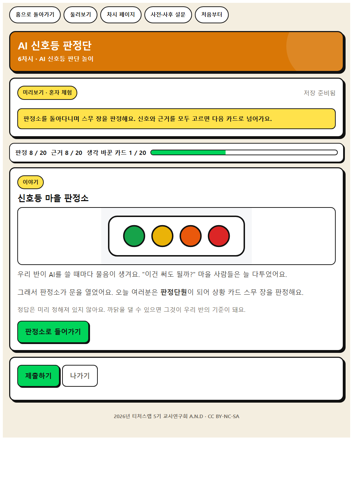
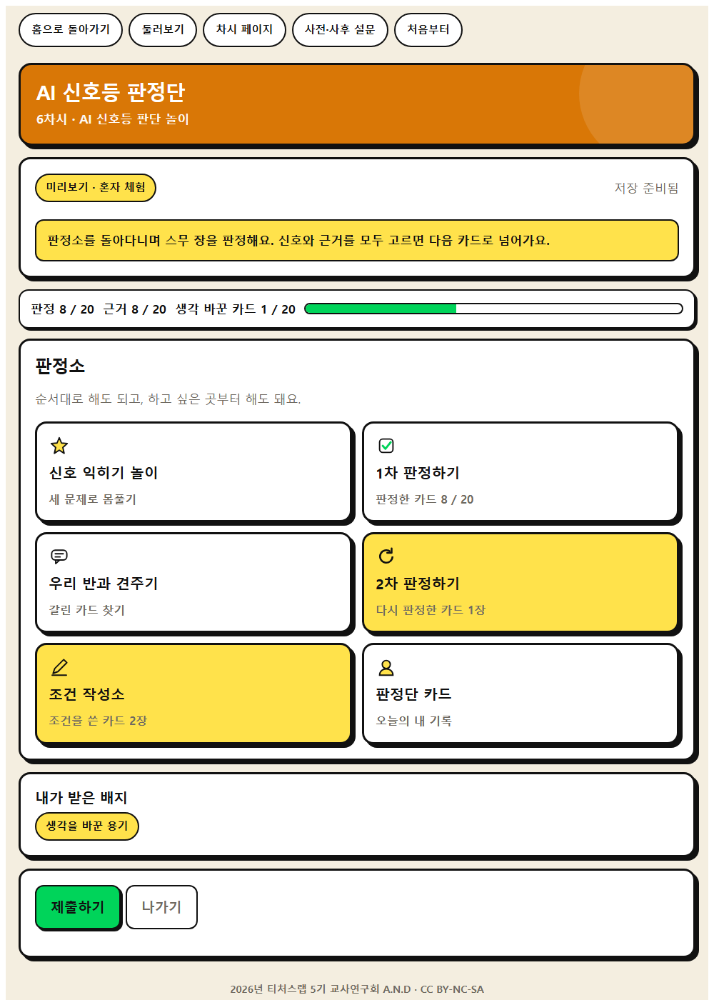
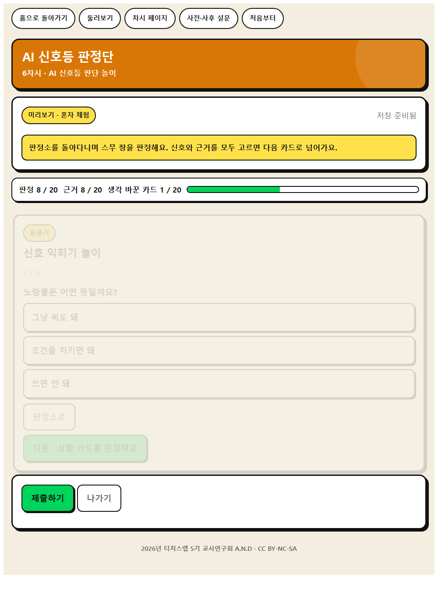
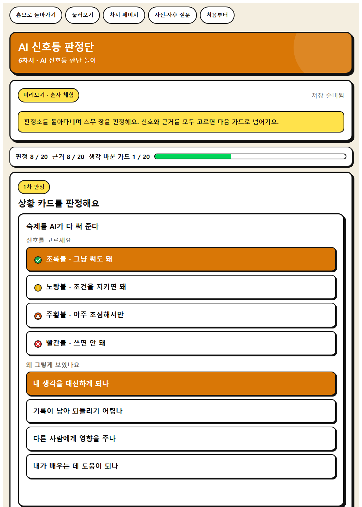
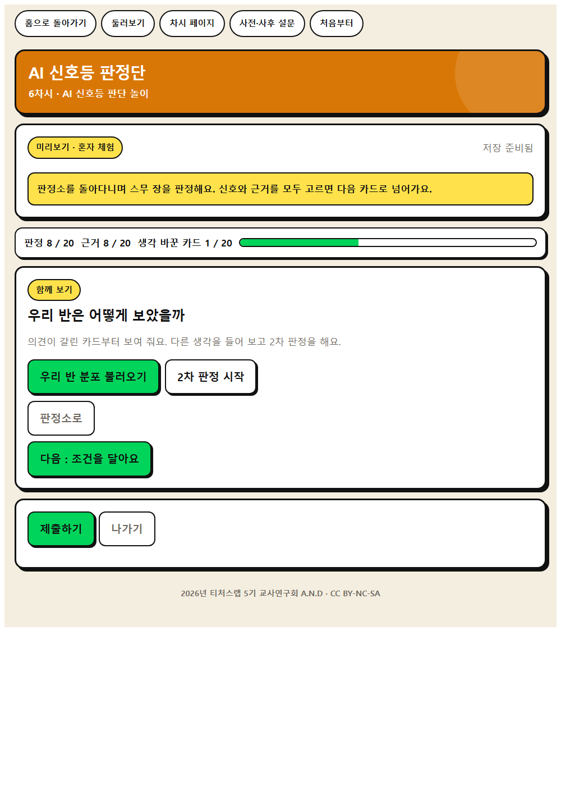
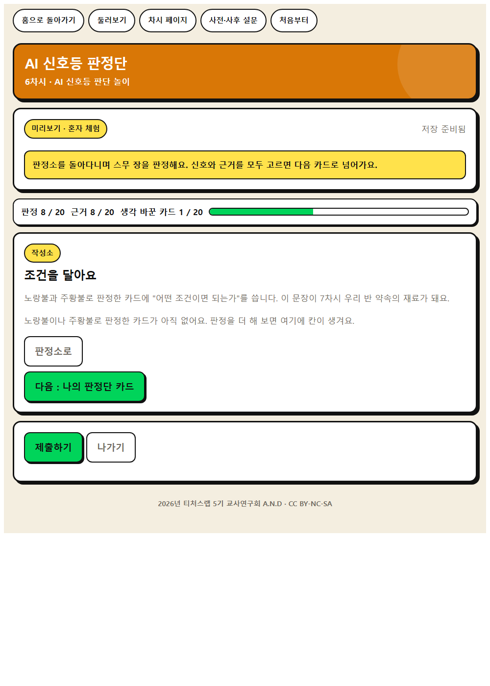
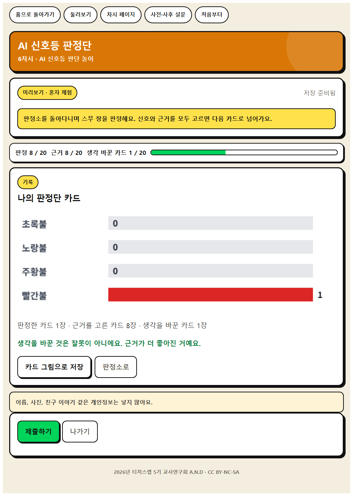

WISE 판단 · 6차시
AI 신호등 판정단
상황 카드 20장을 4색 신호로 분류하고 학급 집계를 실시간으로 띄워, 의견이 갈린 카드를 다시 토의한다.
이 앱으로 무엇을 하나
AI를 써도 되는 상황을 네 가지 신호로 나누어 판단해 봅시다.
윤리적 사고비판적 사고맥락적 사고
배우는 것
- 윤리적 사고 · 활용 상황을 4단계 기준으로 분류하고 판단 근거를 밝히기
- 비판적 사고 · 다른 모둠의 분류와 비교하여 자기 판단을 다시 검토하기
- AI적정활용 구성요소 · ⑧ 맥락 적합성과 형평성
체험하는 법 (세 걸음)
- 혼자 먼저 해 본다. 앱을 열고 닉네임만 넣은 뒤 둘러보기를 누른다. 저장되지 않으니 마음껏 눌러 본다. 웹앱 열기
- 수업 직전에 방을 만든다. 앱에서 선생님 화면을 누르고 비밀번호 네 자리를 정한 뒤 새 방 만들기를 누른다. 여섯 자리 방 번호가 나온다. 칠판에 적는다.
- 학생이 들어온다. 같은 주소를 열어 방 번호와 닉네임, 나만 아는 숫자 네 자리를 넣는다. 제출하면 선생님 화면에 바로 모인다.
기기가 모자라면 모둠에 한 대로 함께 하고, 없으면 인쇄 상황 카드와 4색 분류판으로 진행하고, 학급 집계는 칠판에 스티커를 붙여 대신한다.
화면 미리 보기
실제 앱 화면입니다. 눌러서 크게 볼 수 있습니다.








수업 흐름과 발문
도입 · 5분
동기 유발
동기 유발
- 길을 건널 때 신호가 초록과 빨강만 있으면 어떨까요?
- AI를 쓸 때도 ‘돼요, 안 돼요’ 둘로만 나눌 수 있을까요?
도입 · 5분
학습 문제 확인
학습 문제 확인
- AI를 써도 되는 상황을 네 가지 신호로 나누어 판단해 봅시다.
전개 · 30분
[활동 1] 신호 뜻 익히기
[활동 1] 신호 뜻 익히기
- 네 신호의 뜻을 우리 말로 바꿔 봅시다.
- 주황과 빨강은 어떻게 다를까요?
전개 · 30분
[활동 2] 상황 카드 분류하기
[활동 2] 상황 카드 분류하기
- 상황 카드 20장을 모둠에서 네 칸에 놓고, 이유를 한 줄씩 적어 봅시다.
- ‘친구와 다툰 일을 AI에게만 말한다’는 어디에 놓았나요?
전개 · 30분
[활동 3] 갈린 카드 다시 토의하기
[활동 3] 갈린 카드 다시 토의하기
- 학급 집계에서 의견이 갈린 카드를 함께 다시 봅시다. 어떤 조건이 붙으면 색이 바뀔까요?
정리 · 5분
배움 정리
배움 정리
- 색을 바꾸는 것은 무엇이었나요?
정리 · 5분
다음 차시 예고
다음 차시 예고
- 다음 시간에는 이 기준을 우리 반 약속으로 만들어 봅시다.
함께 보면 좋은 자료
- 자료 초등 짧게 끝내는 생성형 AI 윤리 수업 디지털윤리.kr (방송미디어통신위원회·한국지능정보사회진흥원)
짧은 수업용 PPT를 잘라 신호등 판정 놀이의 상황 카드로 쓴다.
- 자료 EBS 소프트웨어·인공지능 교육 (이솦)
초등용 AI 학습 콘텐츠와 수업 영상을 무료로 받을 수 있다.
- 영상 EBS AI 단추
학년별 AI 개념 영상. 도입 자료로 한두 편 골라 쓴다.
- 영상 EBS Learning 유튜브 채널
채널 안에서 차시 주제로 검색해 최신 영상을 고른다.
- 뉴스 대한민국 정책브리핑
AI 정책과 학교 현장 기사. 사실 확인이 된 자료를 인용한다.